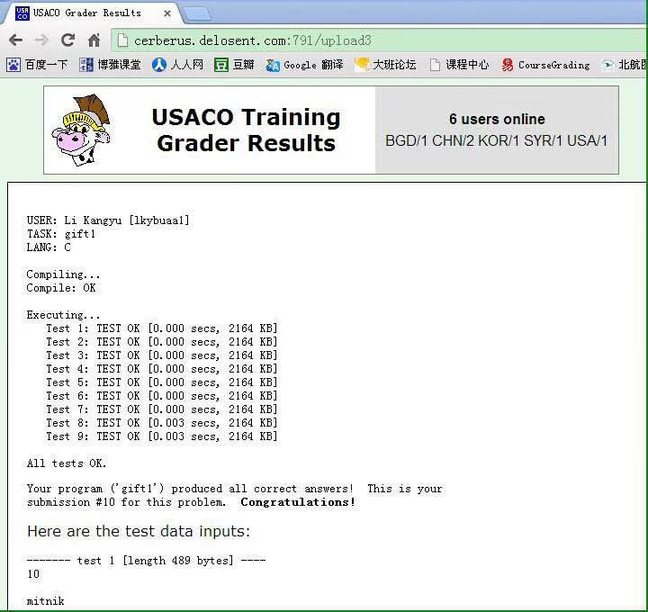
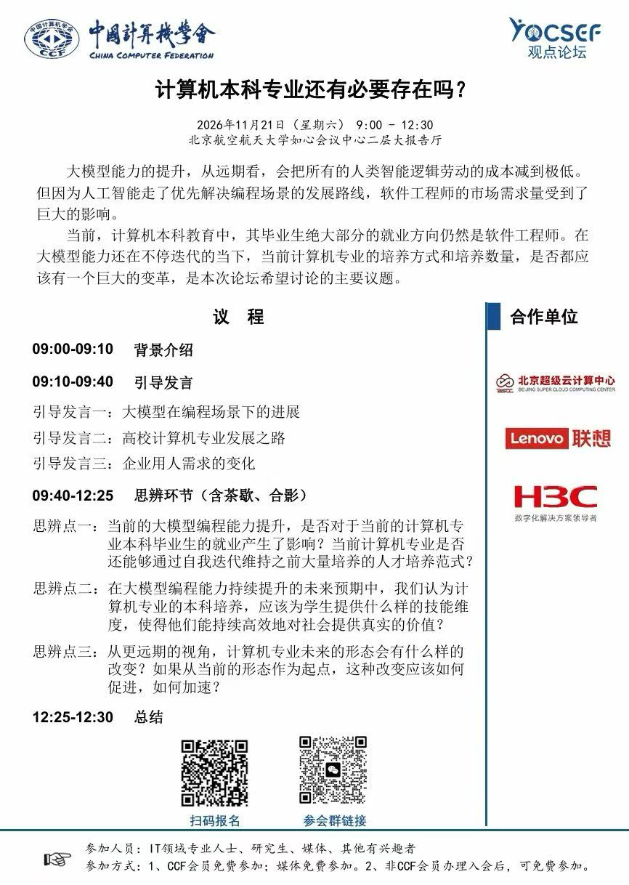

腾讯云的机器到期了，这回没再续，用agent帮忙搬去了 GitHub Pages。
很多图片以为找不到了，是agent在fork的elephant主题仓库的static目录里发现了。感谢AI。
后来又让agent写脚本把 md 渲染成 html，顺手配了自动发布，以后写完 push 一下就行。然后又陆陆续续加了很多功能：评论、深色模式、标签页、搜索框，还有订阅、长文目录和相关文章。。。
N年前我还在一个个试 --bind 参数，今天一下午就把荒废好几年的站点捞了回来。再次感谢AI。
想起14年上熊璋和王静远老师的《计算机导论与伦理学》，布置的小论文作业，主题大概是“畅想一种未来的程序”。
苦于当时的C语言作业，我幻想“未来会有一种自动写程序的程序，把代码逻辑，输入输出格式描述给它，由这个程序自动在codeblocks里生成可运行且通过所有case的程序”。

几年之间，幻想变成了日常，AI浪潮继续向前，实在令人感慨。

欢迎来到 AI 时代
也欢迎回来，日日是好日
（本篇也是 agent 发布）